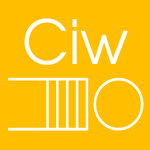

Unleashing the Power of Pathway Simulation
About Me

- Former NHS Analyst/Data Scientist
- MSc Health Data Science @ Exeter
- Now a HSMA trainer
- Mainly a Pythonista these days
(but I ❤️ R too) - Obsessed with Quarto, Streamlit, Simulation, Maps & Dataviz
The Health Service Modelling Associates is a 15 month data science and operational research training and mentoring programme.
Supported by the NIHR PenARC and the NHS Digital Academy, the full programme is provided free of charge to people working in health, social care and policing and is accredited by AphA.

Visit Our Website for Free Training
Pathway Simulation: Why?

Your emergency department is struggling.
You could try a range of different things…
- increase the number of staff available to register, triage or treat
- increase the number of rooms or beds
- increase the rate at which tests can be processed
- add a new step in the process with a different kind of practitioner
- completely redesign of the pathway
Which of these is the right answer?

DES in Python
In Python, there are a range of packages for DES.

Salabim is quite popular.

I’ve also heard good things about ciw
But HSMA has used and taught simpy for several years. It’s mature, stable, reliable and flexible.
DES in R

R has the simmer package.
The Little Book of DES

The HSMA Book of Streamlit

This free eBook walks you through a range of Streamlit concepts.
It then goes on to providing a walk-through of how to create a simple front-end for any DES and deploying that on a free online hosting platform.